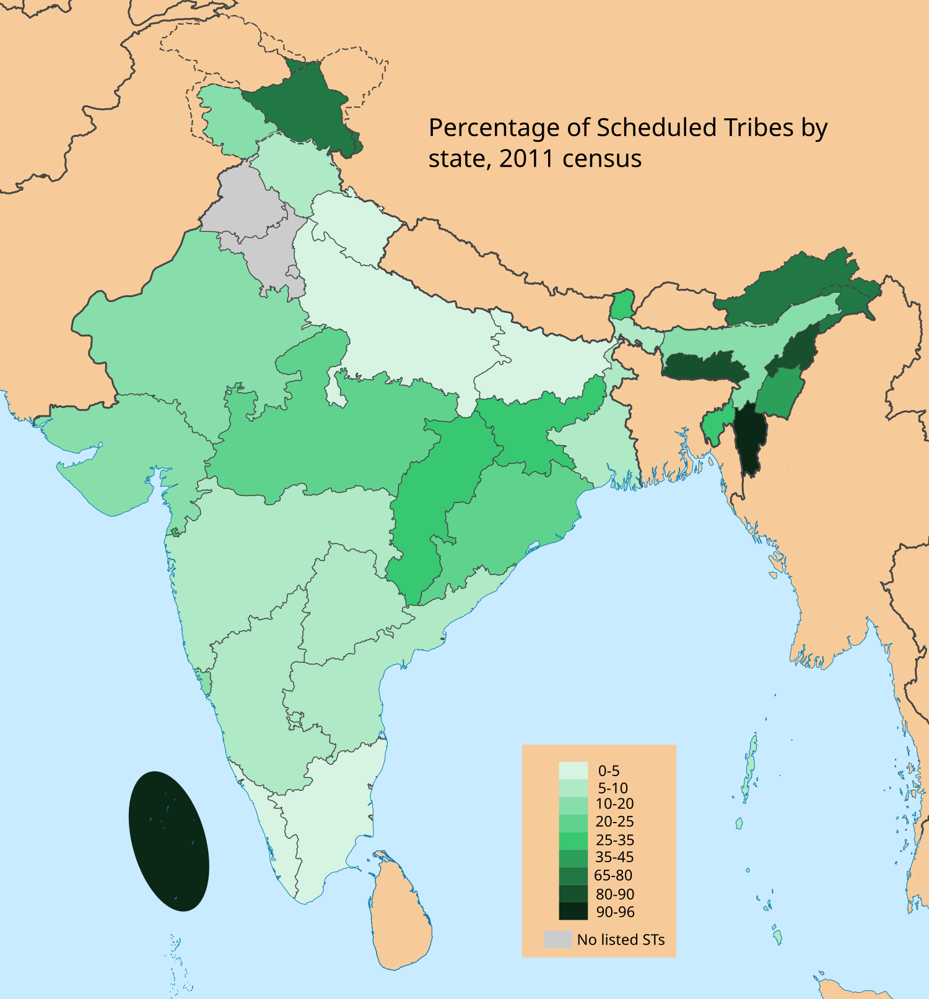

Prelims hook
How to use this sheet (decluttered)
India tab — pick one region; only that tribe list shows (no map hover). World tab — pick one continent/zone. Your Drishti poster stays under “Full poster” for reference.
Jump: ·
8.6% — ST share of India (Census 2011), as on your poster.
PVTGs — 75 groups; Odisha has the highest count among states.
Bhil — largest ST group (~38% of ST pop. in poster); then Gond.
MP — highest ST population · Santhal — Manjhi-Paragana · Lakshadweep ST · Art. 342 & 275.
UPSC spine (India + world)
One screen at a time
- India: 8 regions → major tribes + PVTGs separately
- Special: PVTGs (75) · DNT · matrilineal (Khasi, Garo) · PM-JANMAN
- World: 5 zones → key peoples + short profiles below
India — one region at a time
Tap a region below for a short list. Your Drishti poster is still on this page (open by default under the picker) — we did not delete it.
Where your tribal doc & poster live on this page
- MoTA — Tribal Faces in India (PDF you shared) — not copied into the repo (government publication). Linked in the hero and here. Used for the 16-tribe summary table below (names, states, exam points from MoTA text) and facts like Santhal Manjhi-Paragana.
- Your Drishti poster —
assets/major-tribes-india-reference.jpg(study map + facts). We did not pull random coaching posters from the web (copyright); added an official Census 2011 ST % by state map (CC BY-SA, Wikimedia) next to yours for state-level clarity. - Profiles tab — expanded UPSC cards (Santhal, Gond, …); only partly overlapping the 16 MoTA profiles — open the PDF for portraits & full official write-ups.
Region
Major tribes (poster)
PVTG / exam-heavy
Your poster — Major Tribes in India (shared study sheet)

File: assets/major-tribes-india-reference.jpg · Tribe names in the region picker are aligned to this map.
Official supplement — ST population % by state (Census 2011)

Source: Census of India 2011 via Wikimedia Commons (CC BY-SA 3.0). Use for which states are ST-heavy; your poster for tribe names.

MoTA portraits — Tribal Faces in India (PDF).
Exam facts capsule (poster + Census / Constitution)
- ST population: 8.6% of India (2011 Census).
- PVTGs: 75 groups (2023 list); Odisha has the highest number of PVTGs among states.
- Bhil — largest ST community by population (often cited ~38% of ST population in infographic sources — verify with Census tables).
- Madhya Pradesh — highest ST population among states (2011).
- Santhal — Manjhi-Paragana traditional governance (MoTA); clusters of 50–200 villages.
- Lakshadweep — indigenous population notified as ST.
- Art. 342 — President specifies ST list; Art. 275(1) — grants for Scheduled Areas / ST welfare.
MoTA — Tribal Faces in India (traits & festivals)
Ministry of Tribal Affairs Summarised from your PDF. Yellow = prelims-worthy name / term.
| Tribe | Region | Key characteristics | Festivals / culture |
|---|---|---|---|
| Bhil | CG, GJ, KA, MP, MH, AP, RJ | billu (bow); archers; Budwa / Huvarki / Vaidu healers | Toranmal fair/festival; forest & agriculture |
| Gond | MP, CG, MH, AP, TS, OD… | Among largest ST groups; Raj / Madia / Dhurve / Khatulwar sub-groups; kodo & kutki millets | Bastar Dussehra (distinct); clan totems |
| Santhal | AS, BR, CG, JH, OD, WB | Manjhi-Paragana governance; Marang Buru / Bonga; sacred grove; sericulture | Sohrai, Karam; Chadar Badar puppetry |
| Munda | Chotanagpur | Surnames from nature; sasandiri burial stone; Chotanagpur plateau | Magha, Ba festival; Nupur dance |
| Baiga PVTG | CG, JH, BR, OD, WB, MP, UP | “Forest priests”; bewar slash-and-burn; tattoos by age; new house after death | Seasonal agricultural rites; forest spirits |
| Birhor PVTG | JH + neighbours | Nomadic; tanda camps; monkey nets; honey; barter | Minimal settled festival calendar — mobility |
| Korku | MP, MH (Melghat), CG | Early potato/coffee cultivators; UNESCO endangered language | Flute at Diwali; Munda memorial pillar |
| Madia Gond | CG, MH, MP, OD | Bada / Chota Madia; forest isolation | Ghotul youth dormitory; groom carves Mundha marriage pillar |
| Abhuj Maria | Bastar, CG | Isolated Gond branch; iron neck rings | Kaksar (June), Kudin |
| Bison Horn Maria | Bastar, CG, MH, MP | Bison-horn headdress at weddings; shifting cultivation | Marriage dance; clan god at village edge |
| Warli | MH, GJ, KA, Goa, DNH & DD | Warli painting as belief system; nature worship | Harvest linked rites; mahua / toddy culture |
| Kokna | GJ, MH, KA, RJ, DNH | Konkan link; traditional panchayat | Bohada mask festival |
| Ka Thakar | MH (Thane, Raigad…) | Thakarwadi hamlets; bamboo craft | Chibra lamp at Diwali |
| Koli Dhor | Western Ghats, Mumbai | dhor = cattle; hide tanning → migrant labour | Local village fairs; pastoral identity |
| Pahari Korwa | CG (Jashpur, Sarguja) | Mundari branch; forest medicine | dhank / mandar music & dance |
| Kamar | CG, MP | Bamboo crafts; foothill villages | Family deity — iron chain + peacock feathers |
PART 2 — Region × tribes × landscape (table)
| Region / State / UT | Major tribes & PVTGs | Landmarks & protected areas | Migration / livelihood |
|---|---|---|---|
| J&K / Ladakh / HP / UK | Gaddi, Gujjar, Bakarwal, Bhotia, Monpa, Lepcha, Bhutia some PVTG in border belts | Himalayas, Chenab/Beas; GHNP; trans-Himalayan passes | Transhumance — Bakarwal/Gujjar seasonal alpine pastures |
| Rajasthan / Gujarat | Bhil, Garasia, Damor, Rathwa, Siddi (Gir) | Aravalli, Ranthambore, Gir NP; Great Rann | Agriculture, forest produce; Siddi — African-origin community |
| MP / Chhattisgarh | Gond, Baiga, Bhil, Korku, Kol, Maria, Abujh Maria, Paharia Baiga · Birhor · Paharia | Vindhya–Satpura, Kanha, Achanakmar, Pachmarhi BR | Bewar shifting cultivation; Ghotul (Muria Gond) |
| Maharashtra | Bhil, Warli, Mahadev Koli, Katkari, Madia Gond Katkari | Western Ghats, Tadoba, Melghat | Forest labour, Podu-type patches in ghats |
| Odisha | Santal, Munda, Kondh, Bonda, Juang, Dongria Kondh highest PVTG count among states | Eastern Ghats, Simlipal, Satkosia; Niyamgiri hills | Shifting cultivation (Podu); Bonda — unique dress & market |
| Jharkhand / Bihar | Santhal, Munda, Oraon, Ho, Birhor Birhor | Chotanagpur plateau, Dalma, Betla | Santhal Parha panchayat; Munda Manki-Munda |
| West Bengal | Santhal, Lodha, Toto, Rabha | Darjeeling hills, Buxa, Sundarbans fringe | Toto — near Bhutan border; small population |
| NE (7 sisters + Sikkim) | Naga, Khasi, Garo, Mizo, Bodo, Karbi, Deori, Mishmi, Apatani | 6th Schedule areas; Kaziranga, Namdapha, Dzükou; Brahmaputra valley | Jhum in hills; Khasi/Garo matrilineal clans |
| Andhra / Telangana | Chenchu, Koya, Gond, Yanadi Chenchu | Nallamala, Amrabad TR; Godavari basin | Chenchu — forest foragers, Nallamala |
| Tamil Nadu / Kerala / Karnataka | Irula, Kurumba, Toda, Kota, Paniya, Soliga | Nilgiri biosphere, Mudumalai, Wayanad, Silent Valley | Toda — pastoral, buffalo; Nilgiri ethnic mosaic |
| Andaman & Nicobar | Great Andamanese, Onge, Jarawa, Sentinelese, Shompen, Nicobarese multiple PVTG | AN islands; tribal reserves; Sentinelese — North Sentinel | Hunter-gatherer / horticulture; extreme isolation |
| Lakshadweep | Entire indigenous population notified as ST | Coral atolls, Laccadive Sea | Maritime fishing economy |
World — zones × peoples × biomes
| Zone | Peoples | Biome | Adaptation |
|---|---|---|---|
| East Africa | Maasai | Savanna | Pastoralism, cattle culture, seasonal mobility |
| Kalahari | San (Basarwa) | Semi-arid | Persistence hunting, click languages, water from tubers |
| Sahara / Sahel | Tuareg, Bedouin | Desert | Caravan trade, nomadic pastoralism |
| Arctic | Inuit, Sami | Tundra | Igloo/sod houses, seal hunting, reindeer herding (Sami) |
| Amazon | Yanomami, Kayapo | Rainforest | Shifting cultivation, rainforest pharmacopeia |
| Japan | Ainu | Sub-arctic Hokkaido | Salmon culture, bear ceremony (Iomante) |
| Australia | Aboriginal nations | Desert to coast | Dreamtime songlines, fire-stick farming |
| New Zealand | Māori | Temperate | Haka, marae, Treaty of Waitangi politics |
| Central Asia | Kazakhs, Kyrgyz | Steppe / mountains | Yurt pastoralism, eagle hunting (Kyrgyz) |
MoTA + extra UPSC profiles
All 16 MoTA PDF tribes — key characteristics and festivals in separate columns on the (scroll to MoTA table). Yellow highlight = prelims terms. Below: longer cards for major tribes / PVTGs (not every MoTA row repeated).
Shared terms: Jhum (NE shifting cultivation), Podu/Bewar, Ghotul, Transhumance.
Expanded profiles
Santhal — Jharkhand, WB, Odisha, Bihar
- Location
- Chotanagpur plateau, Rajmahal hills; one of India’s largest ST communities.
- Festivals & culture
- Sohrai, Karam; Chadar Badar; Manjhi-Paragana.
- Socio-cultural
- Patrilineal clans; Santhal rebellion (1855) under Sidhu-Kanhu; Marang Buru / Bonga.
- Economy
- Agriculture, forest produce, sericulture; Manjhi-Paragana governance (MoTA).
- Status
- ST; not PVTG. Literacy improving but displacement from mining/dams remains an issue.
- Protected overlap
- Fifth Schedule areas in Jharkhand; Dalma Wildlife Sanctuary region.
Gond — MP, Chhattisgarh, Maharashtra, Telangana, Odisha
- Location
- Gondwana heartland — Satpura, Bastar, Vidarbha.
- Festivals & culture
- Bastar Dussehra (distinct from plains); Ghotul (Muria Gond).
- Socio-cultural
- Clan totems; Gondi language; Raj/Madia sub-groups.
- Economy
- Bewar shifting cultivation historically; agriculture, tendu leaves.
- Status
- Major ST group; PVTG sub-groups exist in pockets (e.g. some Baiga-linked communities).
- Protected overlap
- Kanha, Achanakmar, Pench; Fifth Schedule.
Bhil — MP, Rajasthan, Gujarat, Maharashtra
- Location
- Largest ST community by population (Census narrative).
- Socio-cultural
- Bhilala subgroup; Ghoomar/Garba influences; Bhil revolts (1818–28 against British).
- Economy
- Agriculture, labour migration to cities.
- Status
- ST; vulnerability from land alienation in tribal belts.
- Protected overlap
- Aravalli, Ranthambore periphery, Narmada valley Fifth Schedule blocks.
Toda — Nilgiris (TN)
- Location
- Nilgiri plateau — pastoral buffer with Kota, Irula, Kurumba.
- Socio-cultural
- Patrilineal; sacred dairy temples; distinctive barrel-vaulted huts; buffalo sacred.
- Economy
- Pastoralism — buffalo milk products; limited agriculture.
- Status
- Small population ST; literacy relatively higher among Nilgiri tribes but land pressure from plantations.
- Protected overlap
- Nilgiri Biosphere Reserve; Mudumalai NP.
Naga — Nagaland, Manipur, Arunachal, Assam
- Location
- Patkai–Naga hills; many sub-tribes (Angami, Ao, Sema, etc.).
- Festivals & culture
- Hornbill Festival (Nagaland showcase).
- Socio-cultural
- Headhunting history (abolished); Baptist Christianity dominant; village councils.
- Economy
- Jhum on hill slopes; horticulture, handicrafts.
- Status
- ST; Article 371A special provisions for Nagaland.
- Protected overlap
- Sixth Schedule not in Nagaland but Inner Line / state-specific autonomy; Intanki, Dzükou valley.
Khasi & Garo — Meghalaya
- Location
- Khasi hills, Garo hills, Jaintia hills.
- Festivals & culture
- Nongkrem (Khasi), Wangala (Garo).
- Socio-cultural
- Matrilineal descent (youngest daughter inherits); Khasi monoliths.
- Economy
- Betel nut, areca, horticulture; coal/limestone debates.
- Status
- ST; relatively better literacy; Sixth Schedule — Meghalaya autonomous districts.
- Protected overlap
- Nokrek BR, Balpakram NP.
Chenchu — Andhra Pradesh / Telangana
- Location
- Nallamala forests — Amrabad region.
- Socio-cultural
- Forest-dwelling; Chenchu language (Dravidian); traditional honey collection.
- Economy
- Hunter-gatherer / forest produce; wage labour pressures.
- Status
- PVTG — low literacy, health access gaps.
- Protected overlap
- Amrabad Tiger Reserve; Nagarjunsagar-Srisailam.
Baiga — MP, Chhattisgarh, Jharkhand
- Location
- Mandla, Balaghat, Bilaspur belt.
- Socio-cultural
- Known as “priests of the forest”; tattoo traditions; shifting cultivation identity.
- Economy
- Bewar shifting cultivation (restricted in protected forests).
- Status
- PVTG — displacement from conservation policies.
- Protected overlap
- Kanha periphery; Fifth Schedule.
Bonda — Odisha (Malkangiri)
- Location
- Bondo hills — Malkangiri district.
- Socio-cultural
- Distinctive dress (ringa); weekly market at Onukadelli; Bonda Gadaba cluster.
- Economy
- Shifting cultivation, forest produce.
- Status
- PVTG — among most isolated mainland groups.
- Protected overlap
- Near Simplipal / Eastern Ghats corridors.
Birhor — Jharkhand, Odisha, Chhattisgarh
- Location
- Forest belts of Chotanagpur.
- Socio-cultural
- Traditionally nomadic forest dwellers; rope-making from forest fibres.
- Economy
- Hunter-gatherer / forest produce; sedentarisation schemes.
- Status
- PVTG — very small population, extreme vulnerability.
- Protected overlap
- Fifth Schedule; Palamau region.
Katkari — Maharashtra
- Location
- Western Ghats foothills, Raigad, Thane belt.
- Socio-cultural
- Forest-linked; Katkari language.
- Economy
- Forest labour, charcoal historically — bonded labour legacy.
- Status
- PVTG
- Protected overlap
- Sahyadri tiger landscape.
Great Andamanese · Onge · Jarawa · Sentinelese · Shompen
- Location
- Andaman (Great Andamanese, Onge, Jarawa, Sentinelese) & Great Nicobar (Shompen).
- Socio-cultural
- Negrito / Mongoloid heritage debates; Jarawa — voluntary isolation until road (ATR); Sentinelese — no peaceful outside contact.
- Economy
- Foraging, fishing, horticulture (varies by group).
- Status
- All PVTG; Great Andamanese critically few speakers; Sentinelese population unknown (~50–150 estimates).
- Protected overlap
- Tribal reserves; Restricted Area Permit; Sentinel island protected.
DNT note
World — one zone at a time
Pick a zone; only matching short profiles show below. No wall of open accordions.
Zone
Key peoples
Biome / lens
Profiles (filtered by zone)
Maasai — Kenya & Tanzania
- Biome
- East African savanna — Serengeti–Mara ecosystem.
- Adaptation
- Cattle pastoralism; transhumance along seasonal grazing; beadwork; age-set system (moran warriors).
- Challenges
- Game reserves & tourism fencing; land leases; climate stress on pasture.
Inuit — Arctic (Canada, Greenland, Alaska, Chukotka)
- Biome
- Tundra, sea ice.
- Adaptation
- Igloo/snow houses; kayaks; seal & whale hunting; INUPIAT knowledge of ice.
- Challenges
- Climate change — fastest warming; ice melt disrupts hunting; sovereignty vs resource extraction.
Bedouin — Arabian & Saharan deserts
- Biome
- Hyper-arid desert.
- Adaptation
- Camel pastoralism; tent dwellings; tribal confederations; oral poetry.
- Challenges
- Sedentarisation, border hardening, oil economy displacement.
San (Basarwa) — Southern Africa
- Biome
- Kalahari semi-desert.
- Adaptation
- Persistence hunting; click consonants; trance healing dances.
- Challenges
- Eviction from Central Kalahari Game Reserve (Botswana litigation); marginalisation.
Yanomami — Amazon (Brazil / Venezuela)
- Biome
- Tropical rainforest.
- Adaptation
- Shifting cultivation; communal longhouses; shamanic yopo ceremonies.
- Challenges
- Illegal gold mining, mercury pollution, disease from contact.
Tuareg — Sahara (Mali, Niger, Algeria, Libya)
- Biome
- Sahara & Sahel.
- Adaptation
- Camel caravans; indigo veils; nomadic confederations.
- Challenges
- Insurgency, drought, uranium mining in Agadez belt.
Ainu — Japan (Hokkaido)
- Biome
- Cool temperate / sub-arctic.
- Adaptation
- Salmon fishing; bear ceremony; traditional Ainu language (revitalisation).
- Challenges
- Assimilation policy history; 2019 law recognising as indigenous; land rights.
Māori — Aotearoa (New Zealand)
- Biome
- Temperate maritime.
- Adaptation
- Marae governance; whakapapa genealogy; haka; traditional carving.
- Challenges
- Treaty of Waitangi settlements; co-governance debates; urbanisation.
Kazakhs — Kazakhstan & Central Asia
- Biome
- Steppe & Altai mountains.
- Adaptation
- Horse pastoralism; yurt (kiiz uy); eagle hunting (associated Kyrgyz).
- Challenges
- Soviet collectivisation legacy; modern nation-state integration.
Sami — Fennoscandia
- Biome
- Arctic taiga & tundra.
- Adaptation
- Reindeer herding; joik song; duodji crafts.
- Challenges
- Wind farms & mining vs grazing routes; cross-border ILO 169 politics.
Aboriginal Australians
- Biome
- Desert to tropical north.
- Adaptation
- Dreamtime songlines; fire-stick farming; oldest continuous cultures.
- Challenges
- Stolen Generations legacy; Uluru statement; mining on sacred lands.
UN lens: UNDRIP 2007 (non-binding); ILO Convention 169 (binding where ratified — India not ratified). Useful for IR / society essays.
PART 5 — Constitution, law, schemes, committees
| Provision / instrument | Core point for UPSC |
|---|---|
| Art. 342 | President specifies STs in relation to a State/UT (with Parliament power to include/exclude). |
| Art. 342A | President specifies Socially & Educationally Backward Classes (SEBC) — not ST; added via 102nd/104th amendment chain — read with current text. |
| Art. 244 | Administration of Scheduled Areas (Fifth Schedule) & Tribal Areas (Sixth Schedule). |
| Fifth Schedule | ST areas in 10 states (not NE Sixth Schedule states); Governor reports; TAC. |
| Sixth Schedule | Autonomous District Councils — Assam, Meghalaya, Tripura, Mizoram (4 states). |
| Art. 275(1) | Grants-in-aid from Centre for raising administration level in Scheduled Areas / ST welfare. |
| Art. 330 / 332 | Reserved seats in Lok Sabha / State Assemblies for SCs & STs. |
| PESA 1996 | Panchayat (Extension to Scheduled Areas) Act — gram sabha primacy; minor forest produce; local plans. |
| FRA 2006 | Forest Rights Act — individual & community forest rights; habitat rights for PVTGs. |
| Criminal Tribes Act | 1871 colonial act; repealed 1952 → DNT category. |
| Tribal Panchsheel (Nehru) | People develop at own pace; respect tribal institutions; avoid displacement; train tribal talent; no tribal vs non-tribal rivalry. |
Schemes & institutions
| Scheme / body | Purpose |
|---|---|
| PM-JANMAN (2023) | Holistic development of PVTGs — housing, roads, water, education, health, connectivity. |
| EMRS | Eklavya Model Residential Schools — quality education for ST children (target: every block with 50%+ ST). |
| TRIFED | Tribal Cooperative Marketing — MSP for MFP, Van Dhan programme anchor. |
| Van Dhan Vikas Kendra | Cluster-based MFP processing & value addition. |
| PM Adi Adarsh Gram Yojana | Integrated village development in ST-majority villages. |
| MoTA | Ministry of Tribal Affairs — nodal for ST policy & PVTG list. |
Committees & commissions
| Body | Year | Focus |
|---|---|---|
| Lokur Committee | 1965 | Criteria for identifying STs — indicators of primitive traits, distinctive culture, geographical isolation, shyness of contact, backwardness. |
| Dhebar Commission | 1960–61 | Comprehensive tribal policy; rehabilitation & development. |
| Xaxa Committee | 2013–14 | High-level committee on socio-economic, health, education status of STs — land alienation, governance gaps. |
| Renke Commission | 2006–08 | National Commission for Denotified, Nomadic & Semi-Nomadic Tribes — enumeration & welfare. |